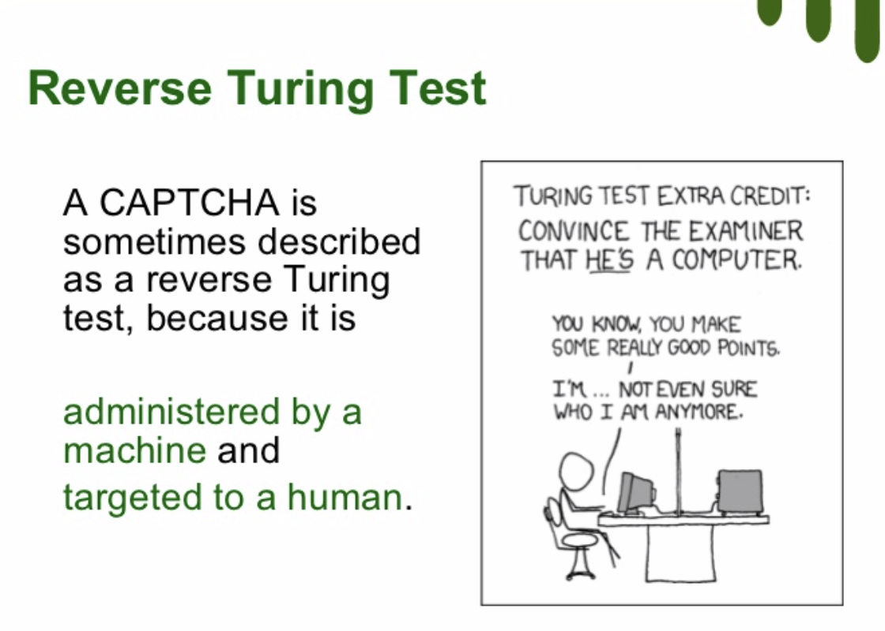
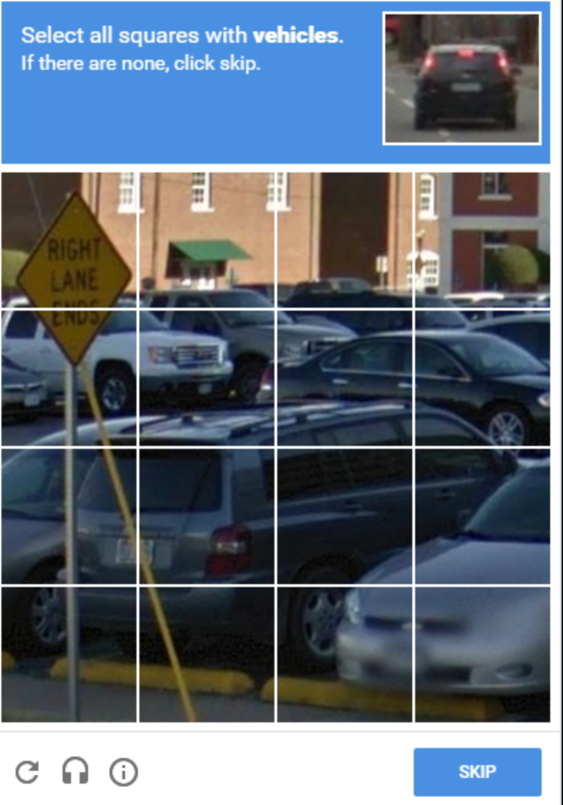

Artificial Intelligence
Grey overlay
Pink
Green
Blue
Cream
Liliac
Purple
Yellow
1 The History of AI
Learn It
- Although people have long thought about the possibility of Machines that could think, the science of AI really started with Alan Turing, back in the 1950s.
- Turing had devised a hypothetical machine called The Turing Machine, that was capable of performing extremely complicated computations.
- Turing devised a party game, called The Imitation Game. In the game, a man (A) and woman (B) would each go off to seperate rooms. They could then communicate with the guests at the party, but only through typed messages. The man and woman would try to convince the guests that they were the other.
- The game was invented only to introduce the second more interesting version.
We now ask the question, "What will happen when a machine takes the part of A in this game?" Will the interrogator decide wrongly as often when the game is played like this as he does when the game is played between a man and a woman? These questions replace our original, "Can machines think?"
- Turing was arguing, that if a machine can convincingly trick a questioner into thinking it was a human, then it can be classified as intelligent. Or more philosophically- what is the difference between a human and a computer that is indestinguishable from a human?
- Let's see how a Turing Test is actually done.
Badge It - Silver
Learning strand: Information Technology
- Open ELIZA in a new tab and have a chat with her.
- She was originally designed as a therapist.
- In 1966, Joseph Weizenbaum created ELIZA, that appeared to pass the Turing test.
- Weizenbaum's program was able to fool some people into believing that they were talking to a real person, with some subjects being "very hard to convince that ELIZA was not human.
- Another more modern example would be Mitsuku.
- She won many prizes in many international and the Turing competition.
- Write up your opinions on ELIZA and Mitsuku.
- Do you think either of them passes the Turing Test? Explain your reasons.
- Can you figure out the rules that dictate ELIZA's responses? Write done the rules you have worked out.
Learn It - Reversing Turing Test

- Reversing The Turing Test has become a focus for research over the past few years.
- This means inventing a test that only a human can pass, and computers will always fail.
- The most common form of reverse test, of which you will probably be familiar is CAPTCHA

- The idea behind CAPTCHA is to present to the user an image that a computer would not be able to understand.
- Without CAPTCHA it would be trivial to design a bot that could register a billion different online email addresses that could be used to send spam, for instance.
Badge It - Gold
Learning strand: Information Technoloy
- This idea of improving AIs with training data is called
Machine learning. - Watch this 8 and half minutes long video to learn about the concept of
machine learning
- There is now an interesting battle between bots and CAPTCHA programs.
- In fact, Google have been using CAPTCHA to train their AIs.
- Read this article to learn a little more.
- Ironically, these AIs that are trained are then capable of solving Google's own CAPTCHA which defeats the purpose of CAPTCHA.
- Read this article to learn a little more.
- Summarise your learnings from the above two articles with focusing on the evoluations of CAPTCHA to identify humans from ever more advanced bots.
Badge It - Platinum
Learning strand: Literacy
Write an short 200 words essay, usingthis article as a starting point, and using good English and examples or scenarios on the following points:
- From a security point of view, what do you think the ramifications of computers being able to imitate humans successfully.
- How might criminals be able to use these technologies?
- How might security experts be able to counter these technologies?